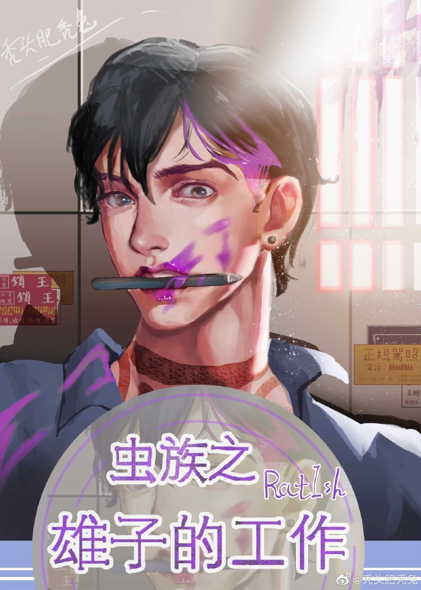

Después de tres días de trabajo sin parar, Cheng Zhaoci ha transmigrado (léase: ha sufrido un derrame cerebral) como es el deseo de todos.
¿Qué se siente al transmigrar a un hombre, el sexo más raro de la raza insectoide?
Cheng Zhaoci respondía: "Sí, no importa, todavía hay trabajo que es mi trabajo por hacer".
Un día, en Internet de los insectoides, que tenían una gran falta de medios de entretenimiento, de repente apareció una nueva cuenta que tenía cómics en serie cortos. Los cómics tenían amor dulce, luchas apasionadas y todo tipo de historias imaginativas. Muchos fanáticos acuden en masa a seguir esta cuenta. Por supuesto, muchas travestis se mostraron escépticas sobre el amor monógamo 1 a 1 representado en esos cómics.
Más tarde, cuando el comandante de ala Wei Zhuo estaba muy detrás de las líneas enemigas, su xiongzhu, el comandante de ala Cheng Zhaoci, vino a rescatarlo sin dudarlo. Fue entonces cuando las travestis se dieron cuenta de que ciertamente puede haber un amor dulce, dulce. Simplemente no les pertenece.
Las travestis sólo quieren sonreír y despedirse.